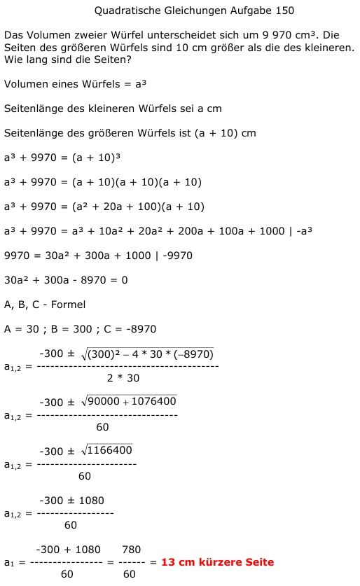

Aufgabe 150 Das Volumen zweier Würfel unterscheidet sich um 9 970 cm³. Die eiten des größeren Würfels sind 10 cm größer als die des kleineren. Wie lang sind die Seiten? Volumen eines Würfels = a3 Seitenlänge des kleineren Würfels sei a cm Seitenlänge des größeren Würfels ist (a + 10) cm a3 + 9970 = (a + 10)³ a3 + 9970 = (a + 10)(a + 10)(a + 10) a3 + 9970 = (a2 + 20a + 100)(a + 10) a3+9970 = a3+10a2+20a2+200a+100a+1000 |-a3 9970 = 30a2 + 300a + 1000 |-9970 30a2 + 300a - 8970 = 0 A, B, C - Formel A = 30 ; B = 300 ; C = -8970  -300 ± 1080 a1,2 = -------------- 60 -300 + 1080 780 a1 = ------------- = ----- = 13 cm kürzere Seite 60 60 Längere Seite = 13 cm + 10 cm = 23 cm -300 - 1080 -1380 a2 = ------------- = -------- 60 60 keine Lösung, negative Länge